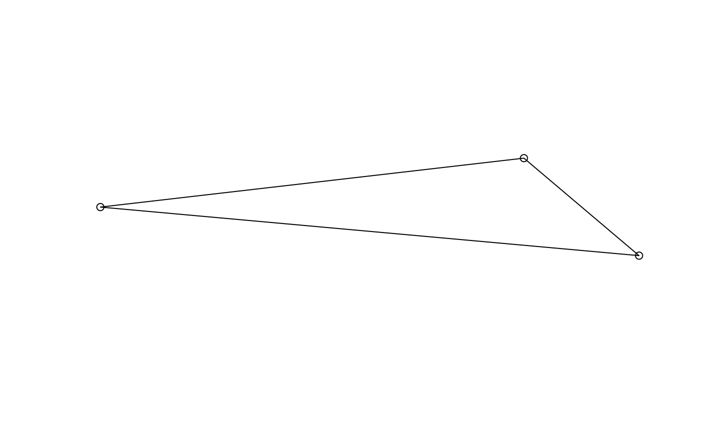
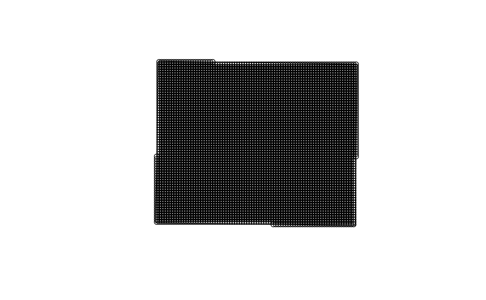

Read SAV data from different formats
Read a CSV file and convert to sf object
Read a spatial points file and convert to sf object
Read a spatial polygon file and generate a grid of points
Usage
read_sav(
file_path,
spacing = 500,
layer = NULL,
crs = 32617,
crs_input = 4326,
export = NULL
)
read_sav_csv(file_path, crs = 32617, crs_input = 4326, ...)
read_sav_pts(file_path, crs = 32617)
read_sav_aoi(file_path, spacing = 500, crs = 32617)Arguments
- file_path
character
Path to the spatial polygon file.- spacing
numeric
Distance between points in meters.- layer
character
Layer name for multi-layer spatial files (default: NULL).- crs
object
Coordinate reference system (CRS) of the output data (seesf::st_crs()). Default is 32617.- crs_input
numeric
Coordinate Reference System (CRS) of the input data, used for CSV import. Default is 4326.- export
character
Optional. Folder path to export outputs as .gpkg.- ...
Further arguments passed on to
utils::read.csv().
Value
A list with points (sf object) and polygon (sf object).
An sf object with required and optional columns.
sf
An sf object with required and optional columns.
A list with the original polygon and a grid of points.
Examples
# Example usage with CSV file
library(sf)
#> Linking to GEOS 3.12.1, GDAL 3.8.4, PROJ 9.4.0; sf_use_s2() is TRUE
temp_csv <- tempfile(fileext = ".csv")
write.csv(data.frame(
longitude = c(-82.5, -83.0, -84.8),
latitude = c(42.5, 42.8, 42.6),
depth_m = c(5, 10, 7),
fetch_km = c(2.5, 3.0, 2.8),
secchi = c(1.2, 2.3, 1.8),
substrate = c(TRUE, FALSE, TRUE)
), temp_csv, row.names = FALSE)
tmp <- read_sav(temp_csv, crs = 32617, crs_input = 4326)
#> ℹ Determining file type and processing: /tmp/RtmpGS0bL9/file21672a255e5a.csv
#> ℹ csv detected
#> ℹ Retained columns: longitude, latitude, depth_m, fetch_km, secchi, substrate.
#> Removed columns: None
#> ℹ Transforming spatial data.
head(tmp$points)
#> Simple feature collection with 3 features and 6 fields
#> Geometry type: POINT
#> Dimension: XY
#> Bounding box: xmin: 188247.3 ymin: 4706383 xmax: 376749.5 ymax: 4740545
#> Projected CRS: WGS 84 / UTM zone 17N
#> longitude latitude depth_m fetch_km secchi substrate geometry
#> 1 376749.5 4706383 5 2.5 1.2 TRUE POINT (376749.5 4706383)
#> 2 336453.0 4740545 10 3.0 2.3 FALSE POINT (336453 4740545)
#> 3 188247.3 4723400 7 2.8 1.8 TRUE POINT (188247.3 4723400)
plot(st_geometry(tmp$polygon))
plot(st_geometry(tmp$points), add = TRUE)

# Example usage with spatial polygon file (AOI)
temp_poly <- st_sf(
geometry = st_sfc(st_polygon(list(
rbind(
c(-82.5, 42.5), c(-82.5, 42.8), c(-82.0, 42.8), c(-82.0, 42.5), c(-82.5, 42.5)
)
)), crs = 4326)
)
temp_file <- tempfile(fileext = ".gpkg")
st_write(temp_poly, temp_file, quiet = TRUE)
tmp <- read_sav(temp_file, spacing = 500, crs = 32617)
#> ℹ Determining file type and processing: /tmp/RtmpGS0bL9/file21675e4a5f55.gpkg
#> ℹ spatial file detected
#> ℹ Transforming spatial data.
#> ✔ Grid of 5470 points successfully generated from AOI.
head(tmp$points)
#> Simple feature collection with 6 features and 2 fields
#> Geometry type: POINT
#> Dimension: XY
#> Bounding box: xmin: 400999.5 ymin: 4706028 xmax: 403499.5 ymax: 4706028
#> Projected CRS: WGS 84 / UTM zone 17N
#> geometry longitude latitude
#> 1 POINT (400999.5 4706028) 400999.5 4706028
#> 2 POINT (401499.5 4706028) 401499.5 4706028
#> 3 POINT (401999.5 4706028) 401999.5 4706028
#> 4 POINT (402499.5 4706028) 402499.5 4706028
#> 5 POINT (402999.5 4706028) 402999.5 4706028
#> 6 POINT (403499.5 4706028) 403499.5 4706028
plot(st_geometry(tmp$polygon))
plot(st_geometry(tmp$points), add = TRUE)

# Example CSV file creation
temp_csv <- tempfile(fileext = ".csv")
write.csv(data.frame(
longitude = c(-82.5, -83.0, -83.2),
latitude = c(42.5, 42.8, 42.6),
depth_m = c(5, 10, 7),
fetch_km = c(2.5, 3.0, 2.8),
secchi = c(1.2, 2.3, 1.8),
substrate = c(TRUE, FALSE, TRUE),
limitation = c(FALSE, FALSE, TRUE)
), temp_csv, row.names = FALSE)
# Read the CSV and convert to sf
read_sav_csv(temp_csv, crs = 32614, crs_input = 4326)
#> ℹ Retained columns: longitude, latitude, depth_m, fetch_km, secchi, substrate, limitation.
#> Removed columns: None
#> ℹ Transforming spatial data.
#> Simple feature collection with 3 features and 7 fields
#> Geometry type: POINT
#> Dimension: XY
#> Bounding box: xmin: 1797381 ymin: 4839111 xmax: 1857187 ymax: 4864546
#> Projected CRS: WGS 84 / UTM zone 14N
#> longitude latitude depth_m fetch_km secchi substrate limitation
#> 1 1857187 4839264 5 2.5 1.2 TRUE FALSE
#> 2 1809500 4864546 10 3.0 2.3 FALSE FALSE
#> 3 1797381 4839111 7 2.8 1.8 TRUE TRUE
#> geometry
#> 1 POINT (1857187 4839264)
#> 2 POINT (1809500 4864546)
#> 3 POINT (1797381 4839111)
# Example spatial points file creation (requires sf package)
library(sf)
temp_sf <- st_sf(
longitude = c(-82.5, -83.0),
latitude = c(42.5, 42.8),
depth_m = c(5, 10),
geometry = st_sfc(
st_point(c(-82.5, 42.5)),
st_point(c(-83.0, 42.8))
),
crs = 4326
)
temp_file <- tempfile(fileext = ".gpkg")
st_write(temp_sf, temp_file, quiet = TRUE)
# Read the spatial file and convert to sf
read_sav_pts(temp_file)
#> ℹ Transforming spatial data.
#> ℹ Retained columns: longitude, latitude, depth_m.
#> Removed columns: None
#> ✔ Spatial points file successfully read and processed.
#> Simple feature collection with 2 features and 3 fields
#> Geometry type: POINT
#> Dimension: XY
#> Bounding box: xmin: 336453 ymin: 4706383 xmax: 376749.5 ymax: 4740545
#> Projected CRS: WGS 84 / UTM zone 17N
#> longitude latitude depth_m geom
#> 1 376749.5 4706383 5 POINT (376749.5 4706383)
#> 2 336453.0 4740545 10 POINT (336453 4740545)
# Example spatial polygon file creation (requires sf package)
library(sf)
temp_poly <- st_sf(
geometry = st_sfc(st_polygon(list(
rbind(
c(-82.5, 42.5), c(-82.5, 42.8), c(-82.0, 42.8), c(-82.0, 42.5), c(-82.5, 42.5)
)
)), crs = 4326)
)
temp_file <- tempfile(fileext = ".gpkg")
st_write(temp_poly, temp_file, quiet = TRUE)
# Read the spatial polygon file and generate a grid
read_sav_aoi(temp_file, spacing = 500)
#> ℹ Transforming spatial data.
#> ✔ Grid of 5470 points successfully generated from AOI.
#> $polygon
#> Simple feature collection with 1 feature and 0 fields
#> Geometry type: POLYGON
#> Dimension: XY
#> Bounding box: xmin: 376749.5 ymin: 4705778 xmax: 418227.5 ymax: 4739697
#> Projected CRS: WGS 84 / UTM zone 17N
#> geom
#> 1 POLYGON ((376749.5 4706383,...
#>
#> $points
#> Simple feature collection with 5470 features and 2 fields
#> Geometry type: POINT
#> Dimension: XY
#> Bounding box: xmin: 376999.5 ymin: 4706028 xmax: 417999.5 ymax: 4739528
#> Projected CRS: WGS 84 / UTM zone 17N
#> First 10 features:
#> geometry longitude latitude
#> 1 POINT (400999.5 4706028) 400999.5 4706028
#> 2 POINT (401499.5 4706028) 401499.5 4706028
#> 3 POINT (401999.5 4706028) 401999.5 4706028
#> 4 POINT (402499.5 4706028) 402499.5 4706028
#> 5 POINT (402999.5 4706028) 402999.5 4706028
#> 6 POINT (403499.5 4706028) 403499.5 4706028
#> 7 POINT (403999.5 4706028) 403999.5 4706028
#> 8 POINT (404499.5 4706028) 404499.5 4706028
#> 9 POINT (404999.5 4706028) 404999.5 4706028
#> 10 POINT (405499.5 4706028) 405499.5 4706028
#>